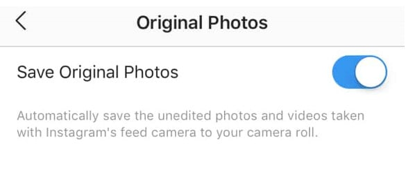
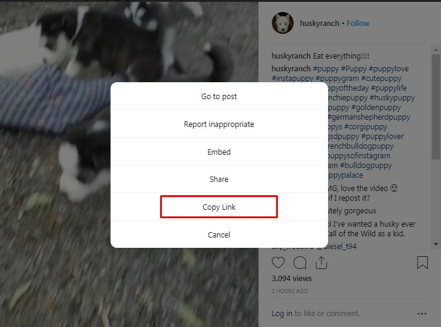
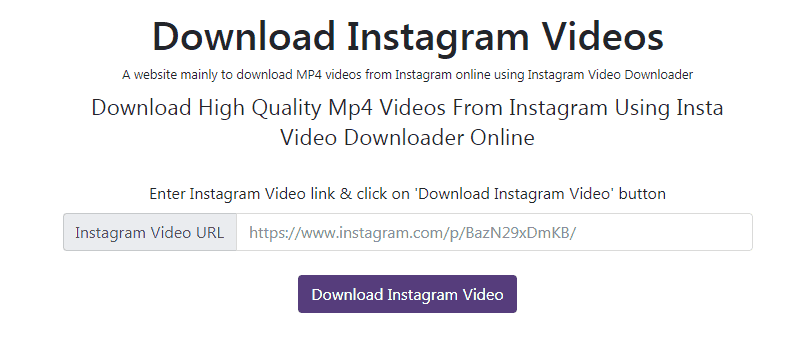
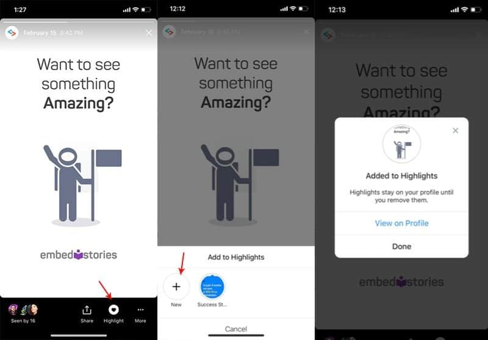
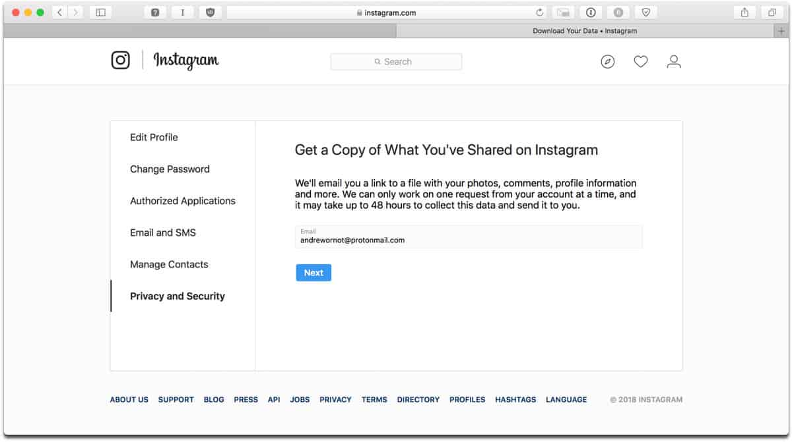

Wish you knew how to download your favorite Instagram photos, videos, and stories?
Millions of photos, videos, and stories are uploaded to Instagram every day. The chances are that when you’re scrolling through all that content, you’ll eventually find something that you want to save.
After all, liking or commenting a post is great, but what if you want to check out that content again later? Screenshotting your phone rarely gives you the quality image you’re looking for.
Maybe you’ll see a video that really inspires you and decide that you want to keep it around for later. Perhaps you’ll find a photo from an influencer that you want to regram (with their permission of course). Whatever the reason, we’ve put together this guide to help you download Instagram videos, photos, and Stories ’til your heart’s content.
How to Download Instagram Photos and videos
Let’s start with the bread and butter of Instagram – photos.
Instagram is packed full of beautiful images that are sure to inspire, motivate, and amaze you.
Whether it’s a snapshot of a cute puppy that fills your heart with joy, or a makeup idea that you don’t want to forget about, there are plenty of reasons why you might want to download Instagram photos.
Unfortunately, Instagram doesn’t make this process simple. There’s no “save photo” option at the bottom of your page. That’s because Instagram wants to avoid copyright issues as much as possible. Before you download anything on Instagram, it’s best to double-check the company’s copyright rules – just in case. Additionally, remember that you always have to get a user’s permission before you repost anything that you download.
With that out of the way, here are a few easy ways to download Instagram photos:
1. Bookmark your favorite pics and videos
One of the easiest ways to download an Instagram post without a screenshot is to track your favorite posts using Instagram bookmarks. Designed to help people rediscover the content that they love, the bookmark feature allows you to tap the bookmark icon at the bottom of any post to save it to a “collection.” You can create separate collections for different content. You might have one collection named “Cute Puppies” and another one called “Makeup ideas” for instance.
You won’t have the photo on your camera roll this way, but you will be able to revisit it later without returning to the original poster’s account and browsing through all of their content.
To visit your collections, tap on the three horizontal lines in the corner of your Instagram profile, and click on the bookmark icon. Here, you can organize and check out all the images that you’ve saved for later. Easy peasy.
2. Save Your Photos Automatically
If you’re not worried about saving other people’s content on Instagram, but you want to make sure that you have a backup of any of the material that you create on the Instagram app, then read on.
Taking a photo or video within the Instagram app is a great way to make sure that you’re taking full advantage of the filters and tools that Instagram offers. Additionally, if you want to give your users a complete and authentic experience, you can use things like Instagram video to create an original vertical video. The only problem is figuring out how to download Instagram videos when you’re done.
Fortunately, by clicking on the profile section in your Instagram account, you can set your app to automatically save anything you create in Instagram, to your camera roll.
Within the Settings section, click on Original photos, then toggle the button next to “Save Original Photos”. This asks the Instagram app to save any videos or photos that you take in Instagram, so you always have an extra backup. This feature is fantastic for companies that want to cross-promote their content across multiple platforms too!

3. Save other people’s photos to your camera roll
If you want to save other people’s content to your camera roll so you can regram it with their permission, or use it as inspiration later, then things start to get a little trickier. There’s no native option to download Instagram videos or photos within the app.
Instagram claims that they’ve failed to provide this service to protect copyrights. However, we all know that some companies love having their images re-grammed by customers and followers in the right circumstances. If you do have permission to download and use another person’s content, then you can use the following workaround to collect their content.
On your smartphone, log into the Instagram app and find the photo you want to save, then click on the “…” option in the corner of the post. This will give you the opportunity to copy the link to the image. You’ll then be able to paste that link into your smartphone browser.

The link will take you to a new version of the image that you want to save, where you can hold your finger over the picture until you get the option to “Copy” the photo. From there, all you need to do is open your notes app and paste the image into a new record. Tap on the “Share” option and click on Save image to move the picture over to your camera roll.
Though this is a helpful workaround for people who want to download Instagram photos, there are a couple of problems with it. First, it’s pretty clunky and slow as image-saving goes. Secondly, you can only save images this way – not videos.
4. Try a Third-Party App
If you find the process of downloading images into your notes too exhausting – or you want to download Instagram videos as well as pictures, then your best bet might be to choose a third-party app. Just make sure that you do your research on any app you’re considering before you use it. You don’t want to give your details to any shady companies.
One pretty straightforward option is to use the “DownloadInstagramvideos.net” app. The good thing about this tool is that there’s no software to download, so you don’t have to worry about ending up with a virus on your device.
To download Instagram videos with this tool, go to Instagram, and open the video you want to download. Click on the three dots again “…” to get your options menu up and click on the “Share URL” or “Copy URL” link. You can also open the video in a new tab on your web browser to get an URL that way.

Go back to the DownloadInstagramVideos.net website and paste your URL into the available input box, then click on Download Instagram Video.
Tada! You can now save the video to your computer or device. Easy peasy.
How to Download Instagram Stories
Saving Instagram pictures and videos are pretty simple these days. There are plenty of people out there who have figured out basic workarounds that you can use, like the ones that we’ve mentioned above. However, understanding how to download Instagram Stories is a bit tougher.
Instagram Stories are neither a video nor a picture – they’re kind of a combination of both. What’s more, they disappear after 24 hours, which means that if you’re not quick to save them, you might never see the content again.
So, how do you download Instagram Stories?
1. Archive your own content for later use
If you want to keep your own Instagram Stories around for later, then you can archive all the content you create within the Instagram app.
Start by going to your Instagram profile, and into the “Settings” section. Click on “Story Settings,” and toggle the button marked “Save to Archive”. This will automatically preserve all the stories that you create in case you want to use them again.
If you click on the Archive icon in your settings in the future, you’ll be able to see all of the Stories you’ve created since you switched this setting on. The Stories are sorted by date to make it easier for you to find the right content.
2. Save Stories in your Highlights
Another way to make sure that your Instagram Stories don’t just disappear is to save them in your “Highlights” section. This is one of the more recent upgrades to appear to Instagram Stories. Basically, it lets you create Highlight sections on your Instagram profile that shows off the previous material that you’ve created.

Highlights are an excellent way to add extra value to your profile. You can use them to answer customer questions with an FAQ section, highlight crucial customer testimonials for social proof, or draw attention to new products and promotions.
Stories saved to your Instagram highlights also remain on your profile for as long as you want them to. If you want to save your Story to a highlight, just click on the “Highlight” button at the bottom of the page when you’re creating your new story. This will allow you to save your content either to an existing highlight, or a new one.
3. Save Instagram Stories with a Third-Party App
If you want to save another person’s Instagram Stories, then things get trickier again. However, it’s not impossible to keep someone else’s story – just tough. Your best option when it comes to downloading Instagram stories is to use a third-party application like EmbedStories.
This is a service specifically designed for people who want to curate and use Instagram Stories with the permission of other creators. With this app, you can save all the unique elements of the Instagram Story, including videos and photos separately, so that you can use the elements that you need and discard the rest.
EmbedStories also allows you to create the code you need to embed the Stories you create on Instagram into any other website. That’s great if you’ve designed some useful stories on Instagram that you want to take into your website or blog.
How to Download All of Your Content on Instagram
If you’re interested in saving all of the content that you’ve ever shared on Instagram – we have some good news for you. The social media platform recently made it much easier to access all your historical material in one go. First announced in 2018, this Instagram download feature works on desktop devices, smartphones, and tablets alike.
All you need to do is go to Instagram.com – the website and log in with your password and username. From there, click on the gear icon next to the “Edit Profile” section to bring up the pop-up menu. Click on Privacy and Security and scroll down until you see an option for “Data Download.”

Here, you can request a copy of everything that you’ve ever shared on Instagram, including videos, Stories, photos, and even comments. Since Instagram needs to create a massive file of all the material you’ve posted online, you might not get an email in your inbox immediately – but be patient, it will turn up eventually.
This is the easiest way to make sure that you have a backup of all the information you’ve posted on Instagram, in case you ever want to use any of your content elsewhere online.
Obviously, this feature only works for content that you’ve shared yourself, so you can’t use it to download other people’s content. However, this option is very useful if you want to make sure that you have a backup of your visual marketing tools.
Downloading Content on Instagram
Downloading photos, videos, and Stories on Instagram isn’t easy – even if you want to save the content you’ve posted in the past. Fortunately, there are ways that you can get your hands on the material that you need. From workarounds to third-party apps, the options above will ensure that you can tap into all of the fantastic sources of inspiration and motivation available on Insta.
For more tips on how to use your Instagram profile, don’t forget to subscribe to SocialFollow.